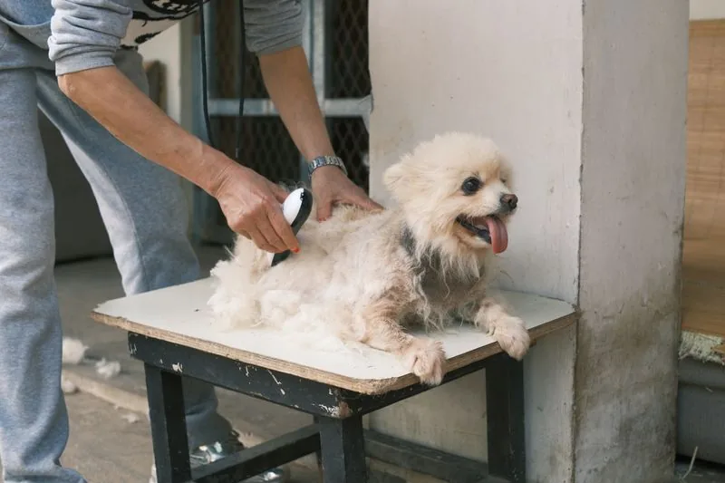
Clipping
A tidy, even clip suited to your dog's coat and the look you want, finished with care around face and paws.
Bignall End, Stoke-on-Trent · Since 2014
Tinkertails is a one-to-one grooming salon run by Nicky, a qualified, fully trained and insured groomer with over 11 years of experience. Your dog gets their own personal appointment, groomed to their individual needs.
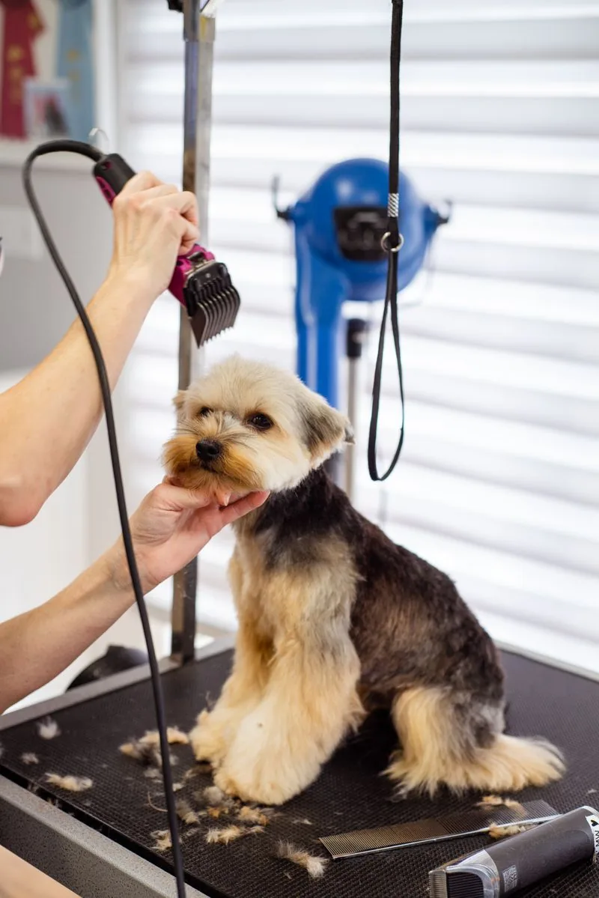
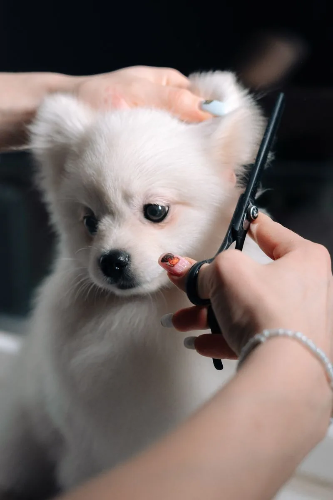
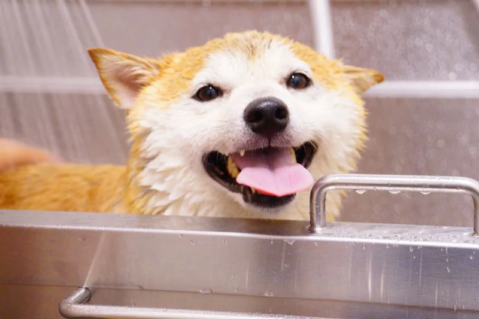
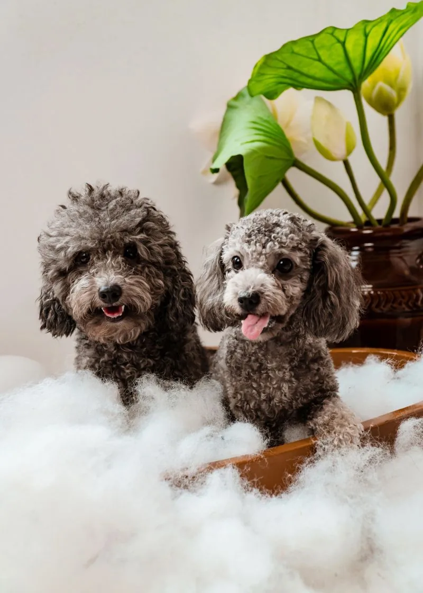
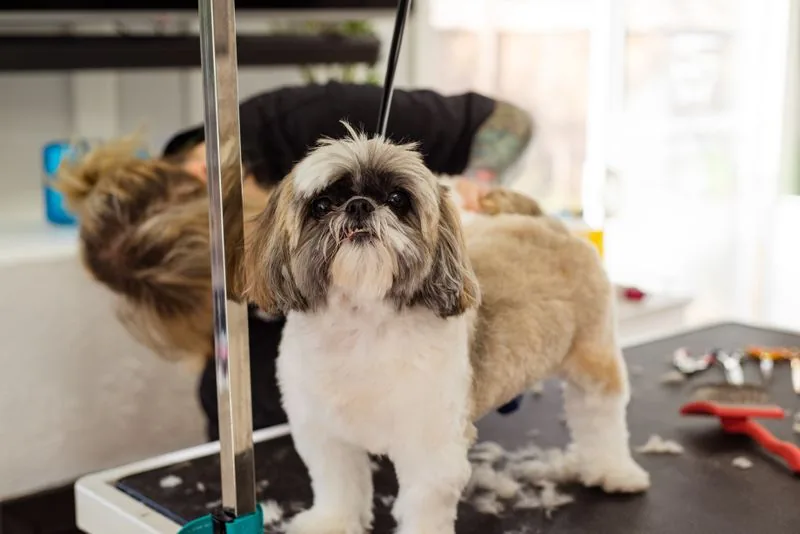
Services
Every dog is groomed to their individual needs. Prices on request: every groom is quoted for your dog's coat, size and temperament, so please ask when you book.

A tidy, even clip suited to your dog's coat and the look you want, finished with care around face and paws.
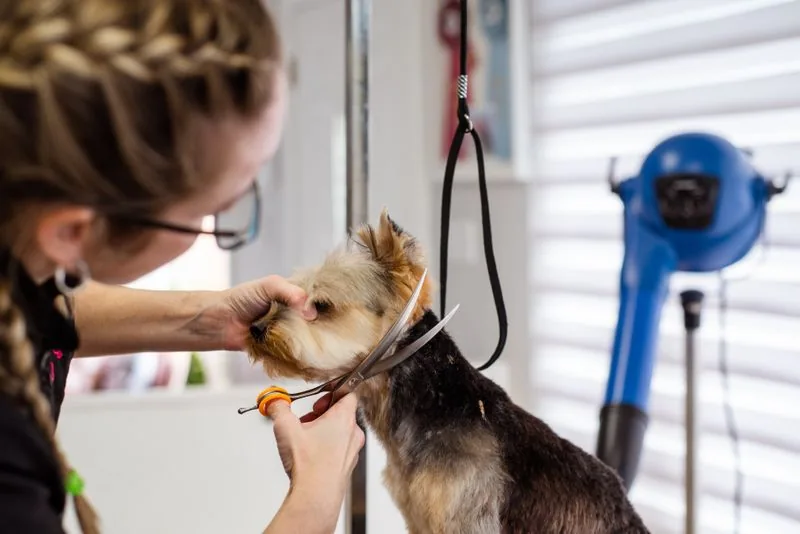
Hand-finished scissor work for a softer, shaped finish, ideal for dogs that suit a styled rather than clipped look.
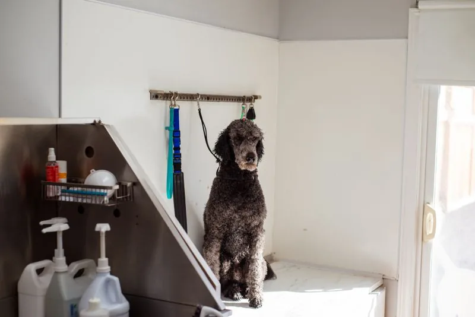
Scissor cuts for the long hair of small and medium dogs, keeping length where it suits and shape where it matters.
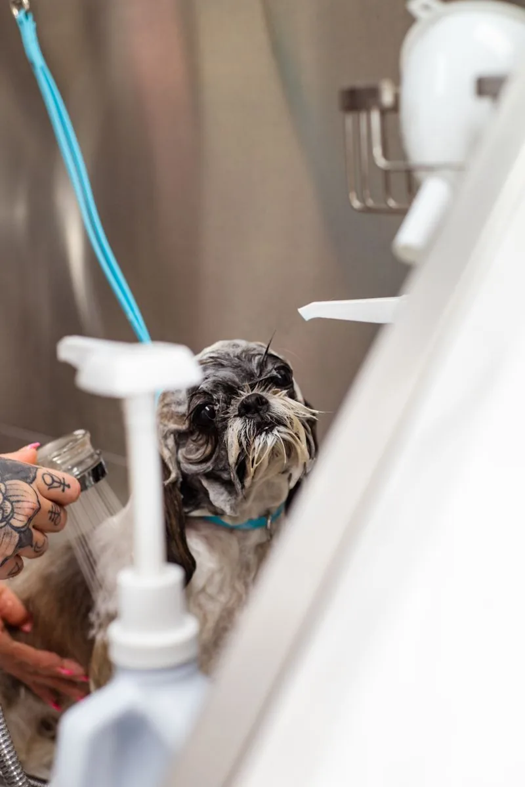
A proper wash followed by a thorough blow-dry, leaving coats clean, fluffy and smelling fresh.
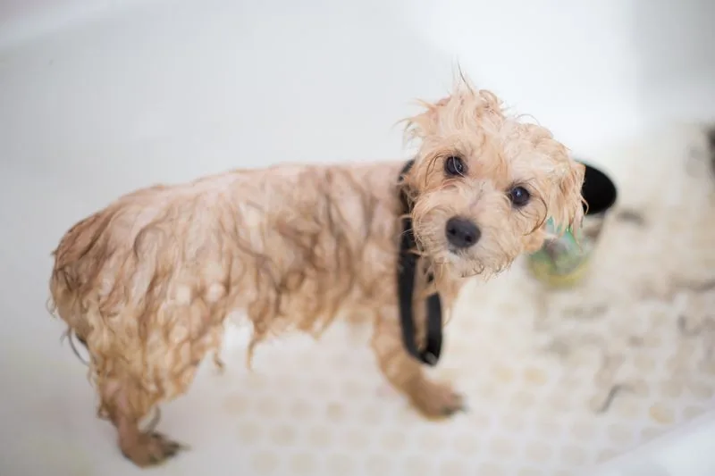
From short coats to thick, curly coats, the wash is matched to your dog's coat type and skin.
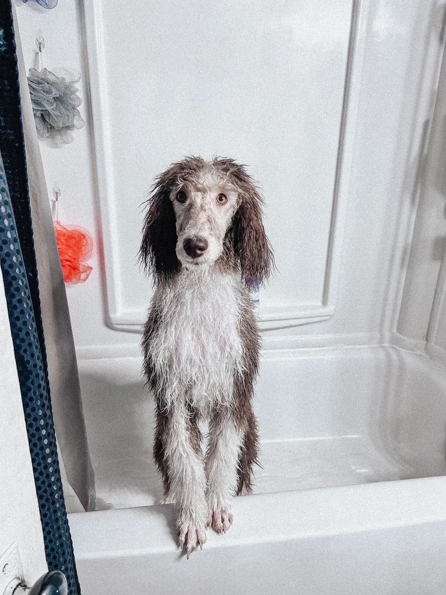
Dried, brushed out and finished so your dog goes home looking smart and feeling comfortable.
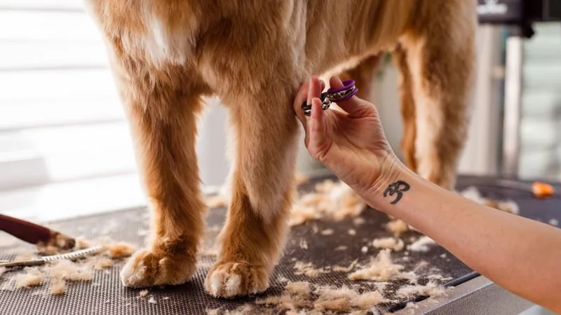
Careful, steady nail trimming included in the groom.
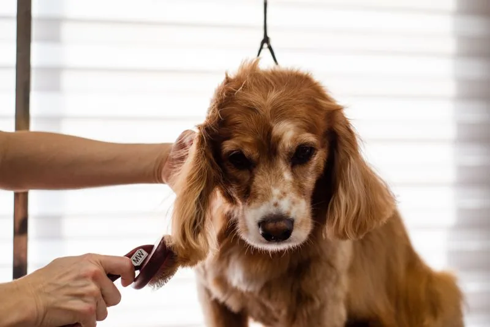
Gentle ear care included in the groom, keeping ears tidy and checked over.
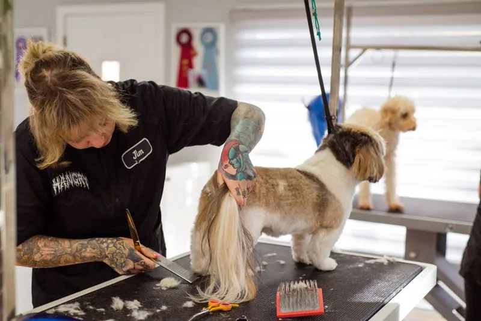
A speciality service for wire coats, done by hand to keep the coat's natural texture and colour.
A calmer visit
Nicky works solely on her own, so your dog is never one of many waiting their turn. Comfort and happiness come first at every step.
Call or email and tell Nicky about your dog's coat, temperament and the cut you like.
Come to Edward Street in Bignall End, or ask about the pick-up service when you book.
Your dog is groomed on their own, at their pace, by the same groomer throughout.
Collect a clean, freshly styled dog, and book the next visit before you leave if you like.
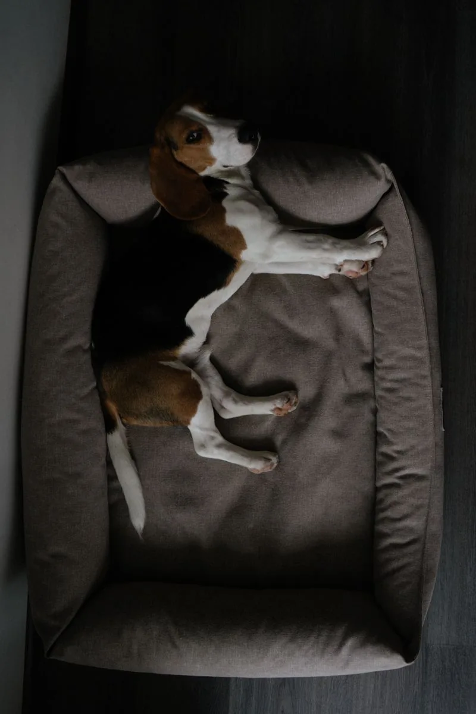
Happy dogs
Tap any photo to see it larger.
Why owners choose Tinkertails
The themes that come up again and again from owners in Stoke-on-Trent:
Owners describe a warm, friendly welcome for both dogs and their people.
Owners say they feel their dog is safe and well looked after with Nicky.
Owners praise careful, professional work, even on overgrown or matted coats.
Dogs go home looking smart and smelling amazing after their groom.
Many owners return again and again, some for years, for every groom.
Book in
Tell Nicky about your dog and the groom you would like. Appointments are one-to-one, so booking ahead is best.
Pick-up service available. Ask about it when you book.
Questions
Yes. Nicky works solely on her own, and every dog gets their own personal appointment, groomed to their individual needs.
Scissor cuts are offered for the long hair of small and medium dogs. If you are unsure whether your dog fits, ask when you book.
Yes, hand-stripping is a speciality at Tinkertails, alongside clipping, scissor styling, nail cutting, ear plucking and blow-dry services.
Yes, a pick-up service is available. Mention it when you book so it can be arranged.
Call 07961 612477, email nickysdoggrooming@gmail.com, or send a booking request through the form above.
Visit
| Monday to Friday | 9:30am – 5:30pm |
| Saturday | 10:30am – 5:30pm |
| Sunday | Closed |